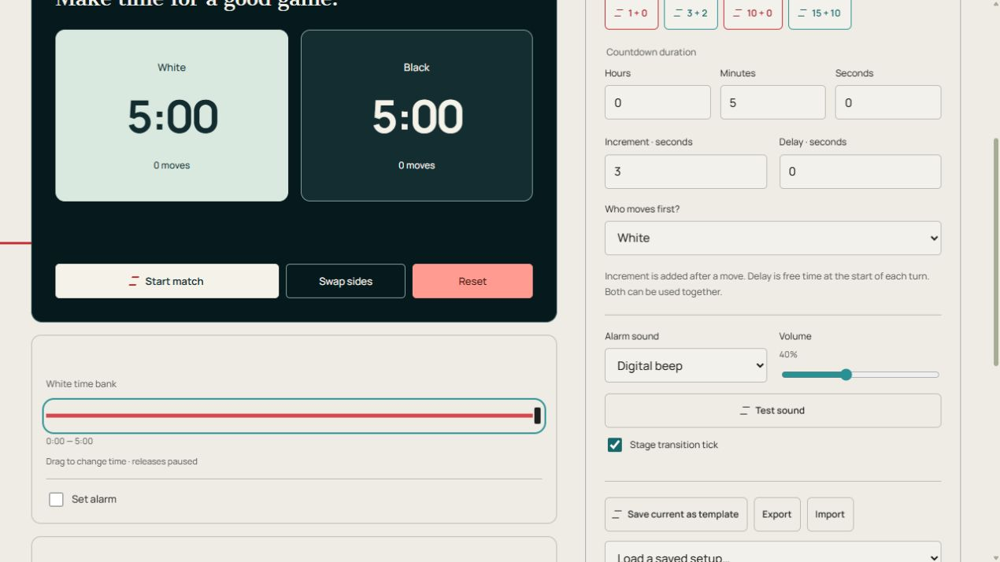

Schachuhr
Online-Schachuhr für zwei Spieler mit editierbarer Zeitsteuerung, Erhöhung, Verzögerung und Zugübergabe.
Schach
Tippen Sie auf Ihre aktive Uhr oder drücken Sie die Leertaste, um Ihren Zug zu beenden.
Lassen Sie diese Registerkarte geöffnet. Mobile Alarme und Hintergrundalarme hängen von Ihrem Browser und Gerät ab. Nach einem Neuladen werden gespeicherte Sitzungen angehalten zurückgegeben.
Anleitung und Tipps
So funktioniert Schachuhr
Der Online-Schach-Timer bietet unabhängige Uhren für Weiß und Schwarz. Wählen Sie eine Zeitsteuerungsvoreinstellung oder geben Sie die Startzeit in Stunden, Minuten und Sekunden ein. Wählen Sie aus, wer sich zuerst bewegt, und drücken Sie dann auf „Match starten“. Tippen Sie nach einem Zug auf die Uhr des aktiven Spielers, um diese anzuhalten und die des Gegners zu starten.
Das Inkrement wird der verbleibenden Zeit des Spielers nach einem abgeschlossenen Zug hinzugefügt. Eine Verzögerung ist eine Schonfrist zu Beginn jeder Runde, bevor die Zeit des Spielers abläuft. Die beiden Einstellungen sind unabhängig und können zusammen verwendet werden. Durch das Pausieren bleibt die ungenutzte Verzögerung für die aktuelle Runde erhalten.
Die Leertaste wechselt die Spieler während eines laufenden Spiels, wenn der Fokus außerhalb einer Eingabe oder Schaltfläche liegt. Der Seitenwechsel verändert die visuelle Anordnung, ohne die Uhren zu ändern. Die Anzahl der Bewegungen verfolgt abgeschlossene Übergaben. Wenn die Zeit eines Spielers Null erreicht, bleiben beide Uhren stehen; Setzen Sie das Spiel zurück, um es erneut zu spielen.
Richten Sie den Timer ein und führen Sie ihn aus
- Wählen Sie eine Zeitsteuerungsvorlage und überprüfen Sie die Startdauer, Inkrement, Verzögerung und Wer bewegt sich zuerst?.
- Tippen Sie auf eine Dauerzahl für die kreisförmige Wählscheibe. Drehen Sie im Uhrzeigersinn, um die Zeit zu addieren, oder gegen den Uhrzeigersinn, um sie zu subtrahieren, und klicken Sie dann auf „Anwenden“. Sie können auch eine Zahl eingeben. Schließen verwirft den Wählentwurf.
- Spiel starten, dann nach jedem Zug auf die aktive Uhr tippen. Pause hält beide Uhren.
- Korrigieren Sie die Zeit eines Spielers mit dem Schieberegler im Pausenmodus und dann „Fortsetzen“. Zurücksetzen bereitet ein neues Spiel vor.
Bedienelemente auf einen Blick

- Start / Pause – Diese Uhr ausführen, halten oder fortsetzen.
- Zurücksetzen – Rückkehr zum konfigurierten Anfang.
- Ton testen – Überprüfen Sie den ausgewählten Ton und die Gerätelautstärke.
- Spiel starten / Pause / Fortsetzen
- Startet oder hält die Zeitmessung für beide Spieler an.
- Weiß/Schwarze Uhr
- Tippen Sie auf die aktive Uhr, um eine Bewegung abzuschließen. Die Leertaste wechselt auch während der Wiedergabe, wenn der Fokus außerhalb eines Steuerelements liegt.
- Seiten tauschen
- Ändert die visuelle Anordnung, ohne die Zeitbanken zu ändern.
- Zurücksetzen
- Löscht das Spiel und stellt die Startzeit wieder her.
- Weiß/Schwarze Zeitbank
- Ziehen, um die verbleibende Zeit zu korrigieren; Dadurch wird die Wiedergabe unterbrochen. Der eingestellte Alarm eines Spielers verwendet die von der ursprünglichen Bank verbrauchte Zeit.
- Vollbild
- Vergrößert die dunkle Uhr. Verlassen Sie den Ort mit der Ausgangskontrolle oder „Escape“, sofern dies unterstützt wird. Die Telefon- und Browserunterstützung variiert.
Einstellungen und gespeicherte Setups
- Alarmton / Lautstärke / Testton
- Wählen Sie Gong, Glocke, Piepton oder Aus, stellen Sie die Lautstärke ein und testen Sie, ohne die Uhr zu starten.
- Aktuelles als Vorlage speichern / Gespeichertes Setup laden…
- Geben Sie einen Namen ein und wählen Sie „Setup speichern“; Abbrechen schließt den Benennungsdialog. Wählen Sie einen gespeicherten Namen, um diese Konfiguration zu laden. Durch die Wiederverwendung eines Namens wird diese Vorlage ersetzt. Vorlagen speichern Einstellungen, keine Zeitberichte.
- Gespeichertes Setup entfernen
- Entfernt die ausgewählte benannte Konfiguration, nicht die Timer-Seite.
- Exportieren / Importieren
- Export lädt ein JSON-Setup herunter; Importieren lädt ein Setup, das vom gleichen Timertyp exportiert wurde. Beim Exportieren im CSV-Format werden, sofern vorhanden, stattdessen die Ergebnisse heruntergeladen.
- Umrissener Stern / Start-Timer erstellen
- Der Stern fügt diese Seite zur Favoritenzeile auf der Hauptseite und zu anderen Timern hinzu. Drücken Sie erneut darauf, um es zu entfernen. „Timer starten“ wählt den Timer aus, der auf der Startseite geöffnet wird.
- Mit Google anmelden / Abmelden / Meine Timer / Synchronisierte Einstellungen laden
- Die Kontosteuerung meldet sich an oder ab. Meine Timer listet gespeicherte benutzerdefinierte Timer auf. „Synchronisierte Einstellungen laden“ lädt empfangene Kontoänderungen; Halten Sie zunächst einen laufenden Timer an.
- Klick beim Abschnittswechsel
- Schaltet den kurzen Handoff-Klick getrennt von den Phasenalarmen ein oder aus.
- Tastaturkürzel
- Space startet oder pausiert; Während des Spiels geht es weiter. Verknüpfungen sind inaktiv, solange sich der Fokus innerhalb eines Steuerelements befindet.
- Inkrement / Verzögerung / Wer bewegt sich zuerst?
- Inkrement fügt Sekunden nach einer Bewegung hinzu. Durch die Verzögerung erhalten Sie zu Beginn einer Runde kostenlose Sekunden. Beide können zusammen verwendet werden.
Beispiel: ein dreiminütiges Spiel mit Inkrement
Wählen Sie 3 + 2: Jeder Spieler beginnt mit drei Minuten und erhält nach Abschluss eines Zuges zwei Sekunden. Belassen Sie die Verzögerung bei Null, es sei denn, Ihre vereinbarte Steuerung schließt dies ein. Starten Sie das Spiel und tippen Sie dann nach jedem Zug auf die Uhr des aktiven Spielers.
Andere Verwendungsmöglichkeiten
- Ein längeres Gelegenheitsspiel
- Ein Match mit einer Zugverzögerung
Praktische Ratschläge
- Vereinbaren Sie Startzeit, Inkrement und Verzögerung vor dem ersten Zug.
- Platzieren Sie das Gerät so, dass beide Spieler die aktive Uhr bequem erreichen können.
- Tippen Sie nach Abschluss Ihrer Bewegung einmal auf und prüfen Sie, welche Uhr aktiv ist.
- Pause für eine echte Unterbrechung, anstatt einen Spieler Zeit verlieren zu lassen, während das Spiel unterbrochen wird.
- Lassen Sie die Seite geöffnet und verwenden Sie eine dedizierte physische Uhr, wenn Ihre Veranstaltung eine erfordert.
Speicher-, Sound- und Browserbeschränkungen
Einstellungen, benannte Vorlagen, benutzerdefinierte Timer und Favoriten werden in diesem Browser gespeichert. Melden Sie sich oben rechts bei Google an, um gespeicherte Setups zu synchronisieren. Wenn „Synchronisierte Einstellungen laden“ angezeigt wird, halten Sie vor dem Laden an. Die Synchronisierung gespeicherter Setups synchronisiert keine Live-Uhren zwischen Geräten.
Lassen Sie diese Registerkarte geöffnet und testen Sie den Ton auf dem Gerät, das Sie verwenden möchten. Telefone und Browser können Alarme in Hintergrundregisterkarten oder im gesperrten Zustand verzögern. Durch Neuladen werden gespeicherte Uhren angehalten wiederhergestellt. Durch das Schließen der Seite wird der Live-Alarm nicht weiter ausgeführt.